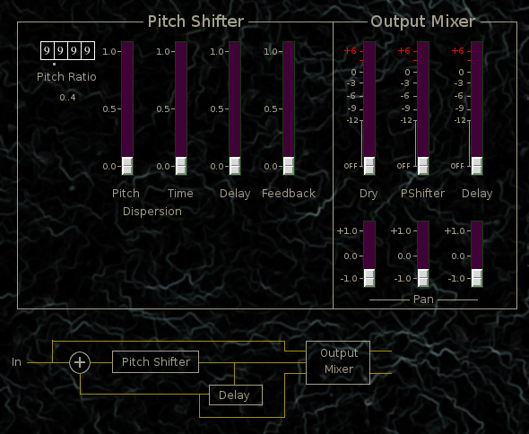

Pitchshifter
 Previous( chronos )
Next( lfo1 )
Home
Contents
Previous( chronos )
Next( lfo1 )
Home
Contents
Pitch shifter with feedback

Pitch Ratio tumbler. Pitch shift ratio, up to 2 octaves
Pitch Dispersion Adds randomness to pitch
Time Dispersion Adds randomness to time of shifted signal
Delay Feedback delay time
Feedback Feedback amount
Output Mixer
Dry, Dry signal output mix (0,2)
PShifter, Shifted signal output mix (0,2)
Delay, Delay signal output mix (0,2)
Dry Pan
PShifter Pan
Delay Pan
Previous( chronos ) Next( lfo1 ) Home Contents